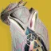
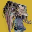
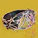
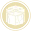

头盔赛季 8
遁形处决
隐身与治疗：
用充能近战击杀或使用终结技时，获得虚空隐身，回复 67 点生命值。
使用终结技时按高一档目标计算。
隐身持续时间：
・：7 秒
・与：10 秒
・及以上：13 秒
小棒猪
搭配烈日火刀扇和升龙电猎勉强能玩，然而他们都有更好的异域护甲选择
隐身与治疗：
用充能近战击杀或使用终结技时，获得虚空隐身，回复 67 点生命值。
使用终结技时按高一档目标计算。
搭配烈日火刀扇和升龙电猎勉强能玩，然而他们都有更好的异域护甲选择
飞刀强化：
装备权衡飞刀后，飞刀可第二次弹跳，追踪能力大幅增强。
强化飞刀的触发与持续：
连续造成 3 次精准命中（相邻命中间隔不超过 2.5 秒）获得「强化飞刀」，持续 10 秒。
生效期间，每次精准命中延长 5 秒，最长 30 秒。
强化飞刀的效果：
权衡飞刀伤害提高 300%[100%]，近战属性 +50[+30]；命中可眩晕势不可挡勇士并消耗强化飞刀增益。
PVP
强化星相「线织幽灵」：
幽灵获得 50%[25%] 伤害抗性，持续时间延长 67%，并附带 2 只停驻的线虫。
幽灵受到 40 点伤害时释放停驻的线虫。
幽灵被摧毁时释放全部停驻的线虫。
伤害抗性对自己造成的伤害无效。
处在自己的线织幽灵 15 米内时脱离雷达，由「隐匿」增益标示。
使用职业技能后 19 秒内，职业技能回复速度 ×0.5。
力量平衡能让自己打爆的线织幽灵产出线虫，可以通过缚丝猎超能诱捕猛击、棱镜猎异域武器无限飞升产出大量分身，搭配神器集群战术打爆分身产出大量线虫，伤害意外的不错但是有点整蛊
超能结束时触发收招爆发：
在 10 米内触发无衰减爆炸并施加致盲（基础伤害 675 [?]，随反射次数提高至最高 2700 [?]）。
同时获得 4 层电弧武器激涌，持续 21 [16] 秒。
反弹沙漠尾王激光很帅
掉落炸弹：
使用职业技能时，掉落一枚离别赠礼，1.5 秒后爆炸（接触地面或敌方目标立即引爆），在 7 米内造成 440[120] 伤害。
虚空 10 秒压制和电弧 10 秒致盲都很不错
飞刀与元素效果：
感应爆炸飞刀引爆时施加 60+0 层灼烧，击杀时触发点燃。
近战能量回复：
感应爆炸飞刀尚未引爆期间，基础近战充能速率额外提高 625%?。
灼烧每次造成持续伤害时，回复 7%[?%] 近战技能能量；感应爆炸飞刀的固定额度能量获取倍率为 0.7×。
点燃击杀返还一次近战技能充能。
额外充能容量：
烈日飞刀与枯萎之刃可额外储存 +1 次近战充能。
处于棱镜时，飞刀戏法与枯萎之刃可额外储存 +2 次近战充能。
割草最终版本增加的灼烧技能回转几乎不用担心断近战，割草爆爆爆的感觉还是很解压的职业金卡利班合成的玩法也不错
其余条目载入中…
其余条目载入中…
其余条目载入中…
永劫系异域三职业通用，效果由所选教派决定。下文的「永劫盟友」指同样装备了永劫系异域的队友。
其余条目载入中…
三件异域职业物品的 Perk 都仅在装备棱镜分支职业时生效，以下所有之灵同样受此限制。
异域职业物品的属性分布固定：左栏之灵决定护甲原型，右栏之灵提供第三属性。属性重叠时，按DDC 职业金原表右栏图示从高到低的优先级确定第三属性；具体原型、属性及优先次序请查看原表对应之灵的图示。



三件职业物品都能开出用充能近战击杀时：
获得虚空隐身，持续 7 秒。
使用终结技时：
获得虚空隐身，持续 10 秒。
光能盛宴的累积与保留：
超能已满时拾取能量球，获得 1 层光能盛宴，最多 6 层。
换成另一件同样带有噬星者之灵的异域职业物品时，当前层数保留。
强化技能的触发：
使用手雷或职业技能，或造成充能近战伤害时，另外两项技能各获得 1 层强化，持续 5 秒，最多 2 层。
（例如：造成组合打击伤害后，手雷与职业技能回复加快。）
各技能独立计时：
界面上的层数显示与实际生效的技能回复并不一致。
接前例：近战赋予的 1 层强化未到期时使用职业技能，手雷强化升至 2 层并刷新时长；近战获得 1 层强化，持续 5 秒。
职业技能已有的强化不会刷新，尽管界面显示强化 2 层。
15 米内有至少 3 名敌方目标时：
获得生物强化，持续 5 秒。
生物强化效果：
近战伤害提高 165% [100%]。
对使用星相「闪电激涌」时加成降低。
常驻被动：
提供 +35 操控性。
死亡阵痛的触发与衰减：
用与手雷同元素的武器击杀，获得 1 层死亡阵痛，最多 5 层。
每层提高手雷技能伤害，并每秒额外回复手雷技能能量。新层数获得后等待 2 秒再开始倒计时；到期只减少 1 层，不清空全部层数。
用充能近战击杀时：
触发点燃。
该点燃不受近战伤害加成影响。
常驻被动：
额外提供一次职业技能充能。
超能命中与击杀时：
返还超能能量，最多返还 50%超能能量。
超能「丝线打击」与黄金枪最多返还 30%超能能量。
使用手雷技能时：
获得织造铠甲，持续 10 秒。
处在暮域手雷的减速场内时：
敌方目标造成的伤害降低 50% [20%]。
自己与盟友立即获得 1 层冰霜护甲，之后每 0.5 秒再获得 1 层冰霜护甲。
脱离虚空隐身时：
获得不稳定炮弹，持续 9 [3] 秒。
常驻被动：
提供 +10 稳定性、+25 操控性与 0.95× 举枪/收枪时长倍率。
使用职业技能时：
填装全部武器，自动拾取 15 米内的弹药块，并触发填装类武器 Perk。
同时获得「幻金链甲」，持续 15 秒，期间属性加成变为 +25 稳定性、+35 操控性与 0.9× 举枪/收枪时长倍率。
受到近战伤害，或用充能近战命中时：
3 秒内的下一次近战命中获得交叉反击。
交叉反击效果：
基础近战与电弧近战伤害提高 400%，且攻击造成电弧伤害。
用技能对、、勇士、或造成伤害时：
获得 4 层与技能同元素的武器激涌，持续 16 [11] 秒（不可刷新）。
职业技能基础治疗：
使用职业技能时，获得 2 层治愈。
放置屏障时：
生成一道冰影墙，宽度相当于 5 块中型水晶，正中为小型水晶。
屏障冷却改按巍峨屏障的 ? 计算。
使用推进器时：
生成 2 块冰影水晶。
与异域护甲「白霜-Z」不同，不提供集结屏障的属性加成。
放置屏障或使用推进器时：
立即为自己与 12 米内视野可见的盟友回复生命值与护盾。
屏障回复 160 点生命值与 110 点护盾；推进器回复 30 点生命值。
两次治疗脉冲之间有 5 秒冷却。
治疗盟友时：
提供 ?%职业技能能量。
充能近战击杀或使用终结技时：
在敌方目标处触发动能爆炸，在 ? 米内造成最高 400 [?] 伤害。
非连锁爆炸之间有 1 秒冷却。
连锁爆炸：
充能近战击杀触发的断绝爆炸可以连锁。
连锁爆炸在 ? 米半径内最高造成 268 [?] 伤害（伤害较低，但无触发冷却）。
充能近战命中时：
目标 15 米内的敌方目标遭到落雷击中，造成 181 [50] 点电弧伤害并施加震颤。

用与超能同元素的武器击杀时：
为自己与 15? 米内的盟友赋予 1 层恢复，持续 3+1.5 秒。
两次触发之间有 3 秒冷却。
用星相「坚不可摧」格挡期间：
移动速度提高 15%。
星相「坚不可摧」结束时：
按格挡量返还手雷技能能量，从 15% 起算，达到格挡上限后最多返还 60%。
常驻被动：
额外提供一次手雷技能充能。
超能结束时：
获得 4 层与超能同元素的武器激涌，持续 30 [6?] 秒。
放置屏障时：
向前释放 3 道追踪的烈日波形（最远飞行 18.5 米），造成 480 [100] 伤害并施加 60 [30] 层灼烧。
波形命中[击杀]敌方目标时，在其脚下生成太阳黑子。
使用推进器时：
释放烈日球，? 秒后爆炸并呈 X 形释放 4 道烈日波形，伤害与元素效果与屏障波形相同。
施放超能时：
完全回复生命值与手雷、近战、职业技能能量。
自己与 ? 米内的盟友获得 3 层治愈。
超能结束时：
8 秒内每秒固定提供 66% 手雷与近战技能能量。
急冻手雷强化：
急冻手雷追踪能力增强，飞行距离与速度提高 17.5%。
手雷命中回能机制：
急冻手雷、风暴手雷、线虫手雷与涡流手雷造成伤害时回复手雷技能能量（涡流手雷对同一目标两次返能约有 0.8 秒冷却）。
治愈手雷治疗自己或盟友时回复固定量手雷技能能量。
站在自己创造的裂痕内时：
为其中的提供 25% [5%] 伤害抗性。
裂痕与超能「光焰之井」重叠或位于其中时，站在裂痕内仍可获得该伤害抗性。
常驻被动：
额外提供一次近战技能充能。
站在自己创造的强能裂痕内时：
获得吞食，持续 11 秒；重新踏入同一个强能裂痕可刷新时长（最多刷新至 11 秒）。
吞食生效期间：
击杀提供 10%职业技能能量。
摧毁缠结时：
生成 2 只线虫。
强效腐化施加与传播：
近战命中施加强效腐化；被腐化的目标死亡时，向 5 米半径内的敌方目标传播强效腐化。
强效腐化持续伤害：
每 0.52 [0.7] 秒造成一次持续伤害，持续 10 [?] 秒（最多造成 19 [?] 次伤害）。
每次造成 32 [5?] 点动能伤害，整段合计 640 [?] 伤害。
放置裂痕 1 秒后：
触发一道电弧冲击波，在 7.5 米半径内造成 360 [100] 点电弧伤害并打断动作。
之后每 5 秒再触发一道，直至裂痕消失。
装备电弧超能技能时，冲击波附带致盲。